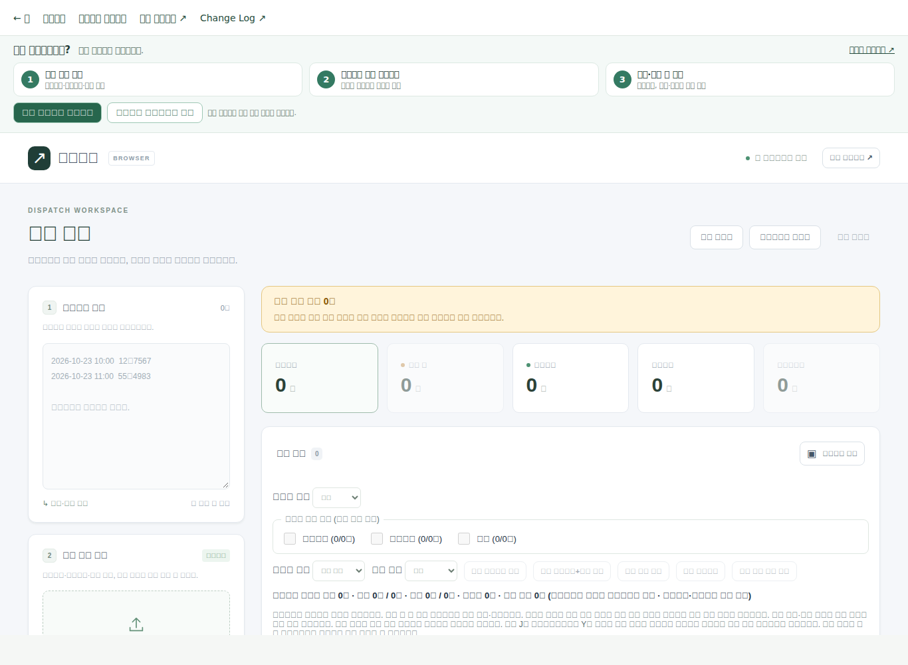
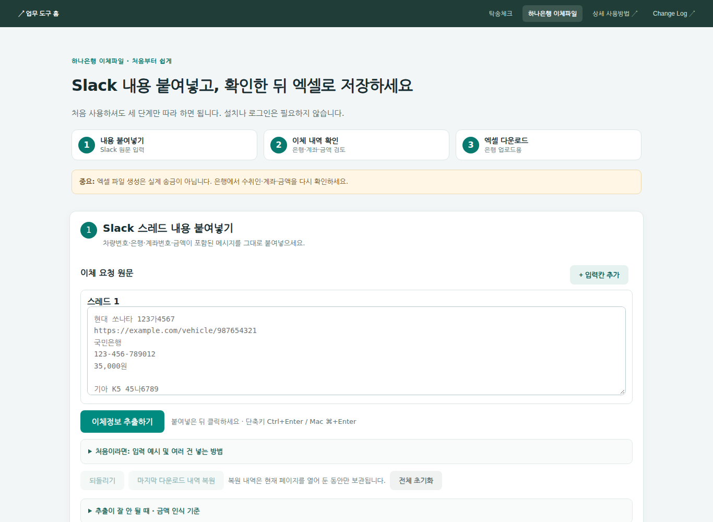
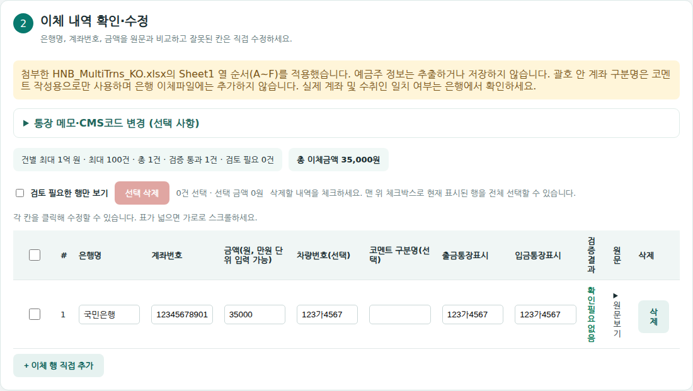
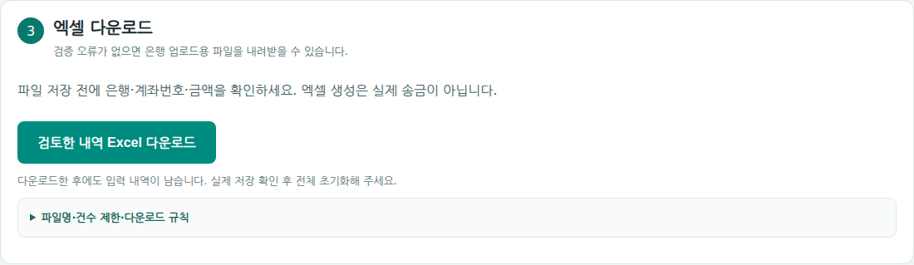

QUICK VISUAL GUIDE
설명서 대신 화면을 보면서 따라 하세요
실제 WorkTool 화면을 캡처했습니다. 각 사진을 누르면 크게 볼 수 있습니다. 처음 사용하신다면 아래에서 업무를 선택하세요.
차량 조회는 이렇게 시작하세요
업체 엑셀과 차량번호를 준비하고, 결과에 누락이나 중복이 없는지 확인합니다.

- 업체 엑셀 첨부
한빛탁송·오픈마일·렌톡 파일을 화면 왼쪽의 첨부 영역에 넣습니다.
- 차량번호 입력
조회할 차량번호 목록을 붙여넣습니다. 날짜와 함께 복사한 내용도 가능합니다.
- 조회·검토·저장
조회 버튼을 누르고 중복·미완료·금액 확인 필요 항목을 검토한 후 저장합니다.
이체파일은 이 순서대로 만드세요
Slack 이체 요청을 붙여넣고, 계좌·금액을 확인한 다음 Excel 파일을 저장합니다.



꼭 확인하세요. 이체파일은 송금 예약이나 실행이 아닙니다. 실제 은행 업로드 화면에서 수취인·계좌번호·금액을 다시 확인해야 합니다. 차량번호가 없다면 팝업에서 차량번호 또는 입금통장에 표시할 이체 메모를 입력할 수 있습니다.
하나은행 이체파일 열기 →